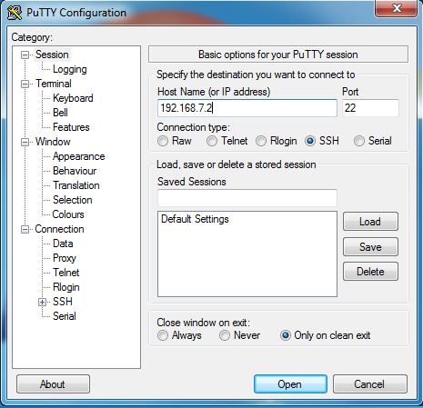
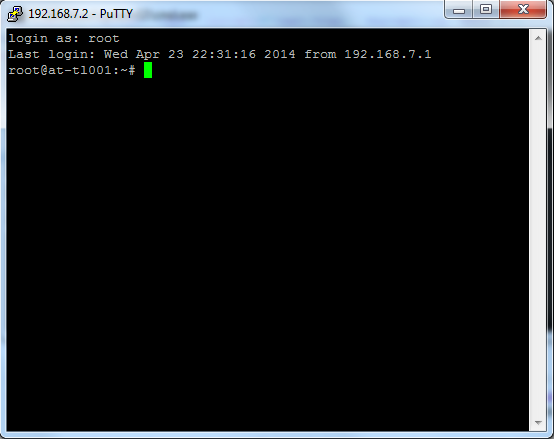
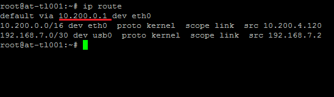
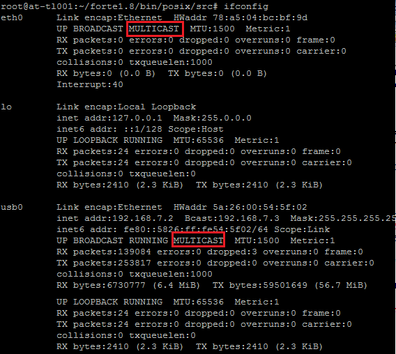
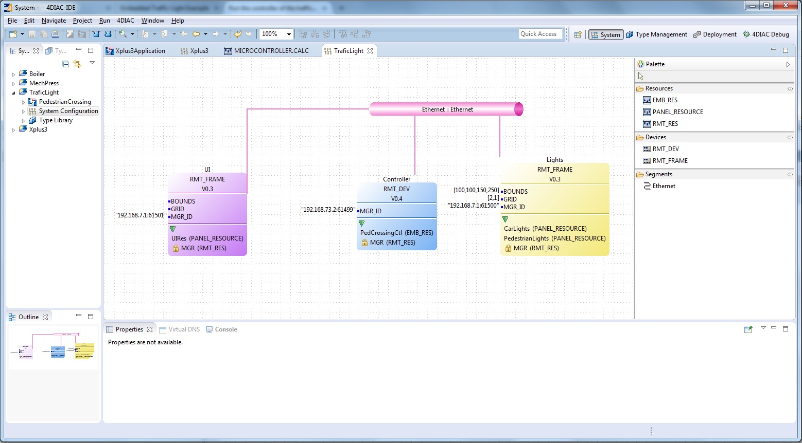
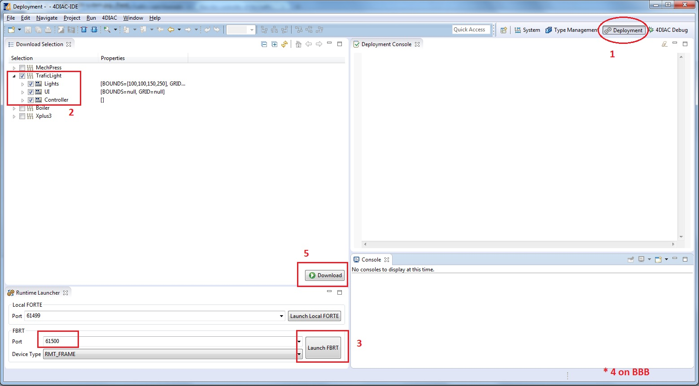
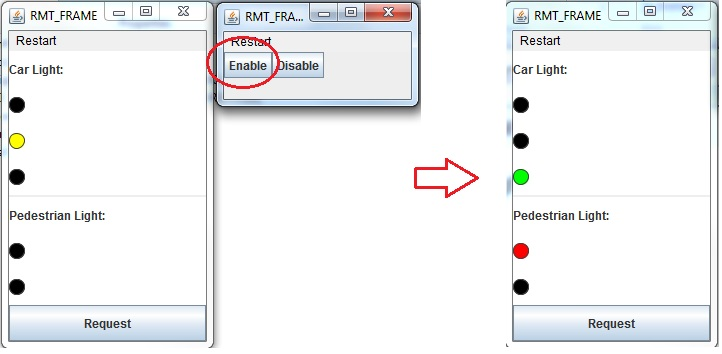
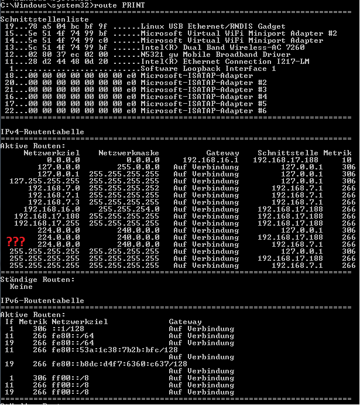
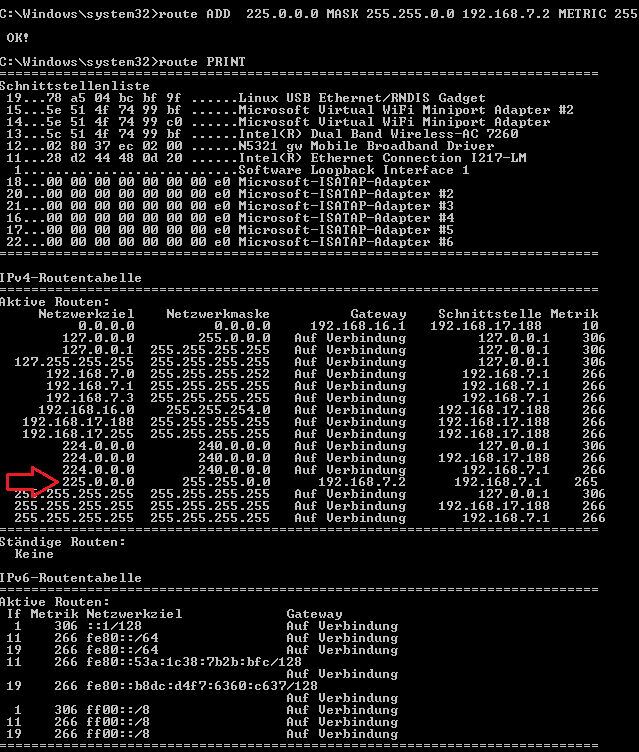

A good practice to get used to the 4DIAC-IDE and the concept of distributed automation, is to apply the Traffic Light example, but instead of running completely in a computer or other platform, we will put the controller part of the Traffic Light example into the BBB, and the lights and Enable/Disable buttons will run in a normal computer using the FBRT runtime.
The BBB has the feature that can emulate an Ehternet port through its USB interface. In order to do this, it is required special drivers in the machine on the other side of the connection. For an accurate information on how to get the BBB ready, take a look at the official BeableBone Page
Once the BBB is connected, it normally has the IP address 192.168.7.2, so a ping from the computer should be succesfull.
With the BBB connected to the computer through the USB, the next step is to connect to it through SSH. In order to do that, a SSH client is needed. For Linux machines, it's already installed and the connection can be done through the terminal, but for Windows machines the simplest solution is to use Putty. To connect to the BBB using Putty, just enter the IP address of the BBB (192.168.7.2), port 22 and clicking on open should open a Terminal window.
The username root without password should work on a BBB that has not been accessed before.
In case you are using the USB as an ethernet interface in the BBB, some changes must be done in it in order for the communication with the computer to work. The command ip route will show the current routes stored in the BBB.
First we are going to delete de default route that goes through the eth0 interface. Use the command ip route del default via [ip] dev eth0 where [ip] is the IP address shown in the default entry routing to ethernet(10.200.0.1 in this case). Next, we are going to add a default entry that routes to the USB using ip route add default via [ip] dev usb0 where [ip] is the IP address of the machine on the other side of connection with the BBB, normally 192.168.7.1. Some people have reported that the interface in the BBB is not allowing Multicast packets, and that would forbid the application to communicate. In order to overcome this, check if the interface you are using in your BBB supports Multicast by using the command ifconfig and you should see the word MULTICAST (all capitals) in your interface, like the image below. If not, run the command: ifconfig usb0 multicast
In order to run FORTE on the BBB, you can either use a cross-compiler in your machine and then transfer the forte executable to the BBB, or you can transfer all the source files to the BBB and compile directly in it. This tutorial focuses on compiling directly in the BBB.
In either way, one more step that must be done is to tell the CMake that you want to include the IO in FORTE. To do that, find first the setup_posix.sh file on the root folder of FORTE, and find the command cmake almost at the bottom, and add the text -DFORTE_MODULE_SysFs=ON (without quotes) just before -DFORTE_ARCHITECTURE=Posix (leaving the blank spaces between them).
To transfer the files from a windows machine to the BBB, an easy solution is the software WinSCP which allows to connect to the BBB and navigate the folders in it in a Graphic Interface. Connect to the BBB using the IP address in the same way as in SSH before. Once connected you will see two folder trees. The one on the left is your local machine and the one on the right is th BBB. In WinSCP, navigate on both trees to the desired folders and select the files to transfer and then click "Upload" to transfer from machine → BBB and "Download" to transfer BBB → machine.
If you can't or don't want to use WinSCP, you can do it via the terminal. In order to do that you will need PSCP, which does not have a Graphic Interface but it runs from the Command Windows (Terminal). Once you download it, you can append the folder name where the pscp.exe file is, in the PATH variable. If not, you can navigate in the terminal to the folder where the pscp.exe file is and execute there the following command: pscp -r "[local FORTE path]" [BBB username]@[ip]:[remote FORTE folder] where [local FORTE path] is the folder on the windows machine where the source code of FORTE is, [BBB username] is the login user for the BBB, [ip] is the IP address of the BBB, and [remote FORTE folder] is the folder where to copy the files in the BBB. The -r option indicates to copy recursively all the folders. An example of the command could be pscp.exe -r "c:\Users\JohnDoe\Documents\forte_repository" root@192.168.7.2:/root/bbb_forte_repository
For building FORTE in the BBB, you need to navigate to the folder where you copied all the files, and run: ./setup_posix.sh which will run CMake and prepare all files. Next go to the folder bin/posix inside your forte folder, and there execute the command: make This will take a while because the BBB is not as fast as a normal computer. That's why a cross-compiler might be a good idea. When the compilation is finished, you will find the forte executable in the folder bin/posix/src inside your forte folder.
If you have trouble with building FORTE, you can follow the steps as the Raspberry Pi. If some softwares are missing in the BBB, find more information in the preparation part of the Raspberry Pi.
Once FORTE can run on the BBB, we are going to use the 4DIAC-IDE to download part of the application on it, and the rest of the application will run in the computer. To do that, we open the Trafic Light application and configure the system where the two frame devices have the local IP address, and the Controller device has the IP address of the BBB. FORTE runs in the port 61499 by default, so be sure that the port of the controller device is set right. The ports of the two frame devices should be different from each other. Connect the devices with an Ethernet conection in the 4DIAC-IDE in case they are not connected. Save the application and you are ready to run it.
With the application properly configured, go to the Deployment view (1) in the 4DIAC-IDE and select the Trafic Light (2) on the left tree. In the Runtime Launcher tab below it, launch the FBRT runtime two times (3), each with the proper port configured as before, and two java windows will open. Run FORTE on the BBB (4). Click Download (5) and each part of the application should be downloaded to the BBB and the two instances of FBRT. Check on the Depployment Console tab that no errors have ocurred.
One frame will contain the Enable and Disable buttons, and the other the Traffic Lights for cars and pedestrians, together with the request button. The yellow light of cars will start blinking and when clicking the Enable button, the information will be sent to the BBB which will process it, and then it will send the information to the frame with the lights, wich will start working normally.
This example should make clearer the idea behind of distributed automation and how easy it could be deployed using the 4DIAC-IDE.
In many cases the communication between the PC and the BBB fails, but mostly due to network configurations problems. Since multicast packets are used to communicate between devices, some adjustments may be needed, specially in windows machines. The first step is to add the multicast addresses used by the application to your route table. You will need admin rigts to do this. Run a command window (CTRL+R → cmd → enter), and type route PRINT to see all the routes used by your PC. You should check that the multicast address used by the application appears there and uses your BBB Ip address as gateway. In the case of the traffic Light example it uses the address 225.0.0.x. In the picture belowe it can be seen that this address is missing.
So, the address should be added and directed towards the BBB's IP address (192.168.7.2). Use the command route ADD 225.0.0.0 MASK 255.255.0.0 192.168.7.2 METRIC 255 in it should appear in the table if route PRINT is executed again. After that, the packets sent to your BBB should arrive.
Another problem found is that even tought the BBB receives the packets and send the answer back, the application is not receiving them. Even tought the packet appears in Wireshark, the application does not receive it. A solution is to disable the ----> FIREWALL <---- completely. After that everything should work fine.
Go back to Examples index:
If you want to go back to the Start Here page, we leave you here a fast access